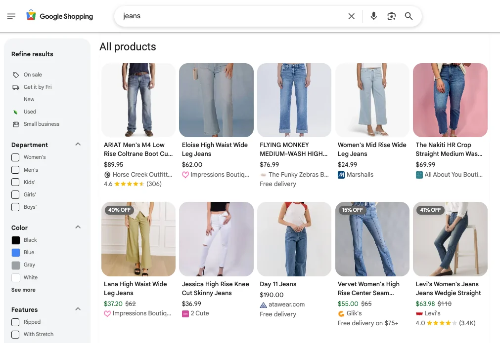
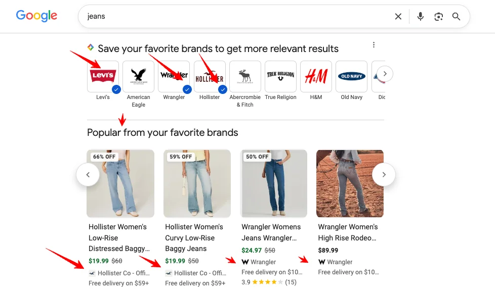
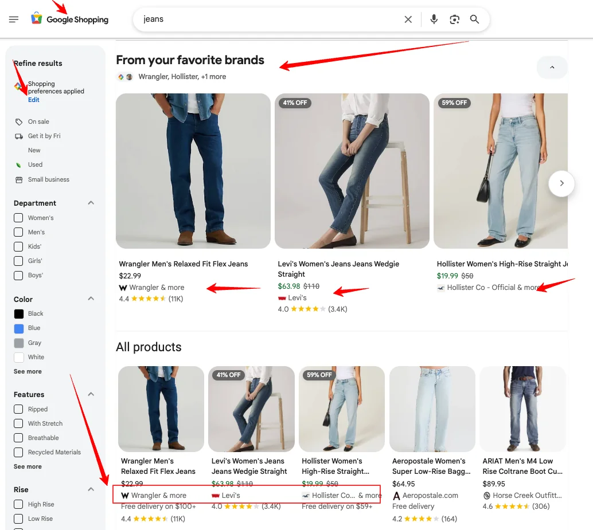

Google is adding a second layer to Search: declared preference. Alongside the ranking it infers from links, content and behaviour, it now lets users state out loud which sources they want to see more of, and rewards that choice with visibility, AI Overviews included. For twenty years the job was to be relevant. This layer is about being preferred.
It started in publishing (Barry Adams calls the pattern an audience loyalty ecosystem), but it's crossing into retail, and that's the part the publishing coverage skips. So this is the retail read: the model, what you can deploy today, and where it appears to be heading.
The model, in one pass
The strategic pattern is the same across each feature. The user makes an explicit choice: follow, prefer, subscribe, save. Google then uses that declaration to personalise how the chosen source appears across that user's experiences. Not a signal inferred from behaviour. A preference stated once, stored against the account, applied on future queries. It sits on top of the ranking you already compete for, and it's earned from your audience rather than from Google's crawl.
Four features carry it, at different stages of maturity and different levels of relevance to retailers:
| Feature | User action | Surface affected | Status | Retail relevance |
|---|---|---|---|---|
| Preferred Sources | Prefer a domain | Search + AI surfaces | Live | Deployable now |
| Favourite Brands | Save a brand | Shopping results | Unannounced test | Most strategically relevant |
| Search Profiles | Follow an entity | Search + Discover | Limited rollout (US) | Notable brands only |
| Subscription Linking | Link a subscription | Search / Discover / AI | Live | Mostly publisher-focused |
What brands can test today: Preferred Sources
Preferred Sources launched in the US and India in August 2025, rolled out globally in April 2026, and since May 2026 feeds AI Overviews and AI Mode. Users pick the sites they want to see more of, and those sites surface more often in Top Stories or a dedicated "From your sources" block. The part that matters for a brand: the opt-in isn't restricted to news publishers anymore. Google documents a deep link (google.com/preferences/source?q=yourdomain.com) plus downloadable "Add as a preferred source on Google" button assets, so any site can send its audience straight to a one-click opt-in for its own domain.
The reason it's worth acting on is the AI surface. Because Google has extended preferred-source personalisation into AI Overviews and AI Mode, the feature opens a possible route to greater visibility for opted-in users across generative Search, one of the few direct, user-controlled mechanisms brands can currently test in AI-led Search.
Be clear-eyed about the limits. It only changes results for users who actively opt in. It's a general "show me more of this source" signal, not a product-level one. It won't hand you a Shopping carousel. There's no aggregate ranking lift, and it is not a guaranteed route into AI Overviews. Treat it as an early-stage visibility test aimed at an audience that already trusts you, not a ranking lever.
Where retail is heading: Favourite Brands
The retail-native version is Favourite Brands, spotted in the wild by Barry Schwartz and detailed in the Favourite Brands note. Search a generic term ("underwear", "trainers", "coffee maker") and a "Save your favorite brands to get more relevant results" widget can appear mid-results. Save one, and a "Popular from your favorite brands" carousel shows up, populated entirely with that brand's products. The selection persists in Shopping preferences, which already supports loyalty-programme connections.



It's Preferred Sources pointed at commercial brands instead of editorial sources, and it's the pillar that matters most to a retailer. It's also the least certain: unlike Preferred Sources, there's no brand-controlled deep link or button yet, so there's no consistent way to send customers to a one-click "save us." Any customer prompt would remain manual for now.
The same pattern, beyond retail
Two more features round out the picture. They're less central to a retail reader, but they show this is a deliberate, broad strategy rather than a one-off test. Search Profiles, announced in June 2026 and US-only to start, gives publishers and creators with a sizeable following on at least one major social or video platform a claimable profile page; users can follow a source directly on Search and are then more likely to see it in Discover. It's framed for publishers and creators, though some notable brands with a substantial following and an established entity presence may also fit the eligibility model. Subscription Linking ties a publisher's subscriber data to users' Google accounts, then surfaces that content in a "From your subscriptions" panel across Search, Discover and AI surfaces. It's mostly a publisher mechanism, but the same declared-commitment logic.
Why it matters commercially
None of this is designed to give anyone their traffic back. These features aren't built to restore broad referral traffic; they give extra visibility to users who've already expressed an affinity with the source. The person who saves you as a favourite brand is unlikely to be a completely cold searcher comparing seven unfamiliar retailers. They already know, follow or buy from you, and they're telling Google to give the brand greater weight. Google isn't primarily opening a cold-acquisition channel here; it's building an affinity and retention layer around an existing relationship. Which does mean part of the modern SEO remit is now persuading customers to change a setting inside Google on your behalf. Not something that was on the original job description.
What it changes in SEO
As the layer spreads, three things follow for how you read the SERP.
The split SERP. Once declared preference feeds results, two people running the same query see different pages, not because of location or device, but because of preferences sitting in their accounts. "Ranking for a term" stops being a single fact and starts meaning different things for different segments of your audience.
The blended average. If declared-preference personalisation expands, Search Console impressions and clicks will increasingly reflect an affinity-weighted reality rather than a universal SERP. Your aggregated numbers quietly merge "how I rank for everyone" with "how I rank for people who already saved me," and those are not the same figure. It's the interpretation problem already created by personalised Search, potentially extending further into commerce-related visibility.
A potentially durable advantage. A brand that persuades its audience to save it holds an affinity signal competitors cannot directly replicate through better feeds, content or backlinks, and for high-affinity customers that can be a persistent edge. Worth being precise, though: this is an influence on personalisation, not an override. Relevance, eligibility, inventory and quality still apply, and Google can change how much weight the signal carries. Call it a durable affinity advantage, not visibility no one can touch.
What to do
Do now
- Test the Preferred Sources CTA. It's the one shippable piece. Use Google's deep link (
google.com/preferences/source?q=yourdomain.com) and button assets; check your domain is eligible first. - Place it where affinity already lives. Editorial and guide pages, the logged-in account area, post-purchase screens, loyalty emails and newsletters, aimed at people who've already chosen you. Frame it as "stay connected," not "help us rank."
- Define the test around what you can actually see. Track CTA engagement and downstream visibility indicators, and accept that Google may not expose a clean opted-in audience segment to measure directly.
Prepare for
- Favourite Brands: monitor and prepare the messaging. Identify the social, account and loyalty touchpoints where a "save us" prompt could live if Google ships consistent brand tooling, and draft the messaging now. Don't actively promote it yet: the save is manual and the experience isn't reliably available to your audience.
- Loyalty-programme connections. Google Shopping preferences already support linking loyalty accounts, a second declared-affinity hook pointing the same way.
- Search Profiles, where eligible. Notable brands with a substantial following and an established entity presence should check whether they qualify for the US rollout.
Don't claim
- Aggregate ranking gains. The effect is per-user, for opted-in users only.
- Guaranteed inclusion in AI Overviews. Preferred Sources raises the odds for opted-in users; it doesn't guarantee placement.
- A confirmed retail rollout. Favourite Brands is still an unannounced test.
Relevance gets you ranked. Preference gets you chosen. Preferred Sources is the only mechanism brands can actively test today; the rest should be monitored and prepared for, not treated as established retail channels.
Frequently asked questions
Which of these features actually apply to a retail brand today?
Preferred Sources is the deployable one: the opt-in works for any domain, and Google supplies a deep link and button assets, so a brand can run a CTA today. Search Profiles may be relevant if the brand meets Google's eligibility criteria: framed for publishers and creators, but not exclusive to them. Favourite Brands is the retail-specific one, but it's an unannounced test with no brand tooling yet. Subscription Linking is news/publishing only.
Is Favourite Brands confirmed?
No. As of 8 July 2026, it remains an observed test with no Google announcement or brand-controlled tooling. Treat it as early signal, not established behaviour.
Does saving a brand affect paid Shopping ads?
Unconfirmed. The "Popular from your favorite brands" carousel appears in the organic area and isn't labelled as an ad. Whether declared preference also touches paid placement is unknown.
Will this mess up my Search Console data?
Potentially, if personalisation scales. Personalised results mean impressions and clicks increasingly reflect affinity segments rather than one universal SERP, so aggregated figures get harder to interpret without accounting for that variance.
Sources and further reading
- Related on MagsTags: Google Favourite Shopping Brand: Personalisation in Search. The retail widget in detail, including what the SERP looks like before and after a brand is saved.
- Related on MagsTags: What Is Agentic Commerce? How AI Agents Change the Shopping Journey. The wider shift in how discovery and buying decisions get made.
- Google Search Central: Preferred sources. The deep-link format and button assets for the CTA.
- Google blog: How to select your preferred sources in Top Stories
- Google blog: A new profile to help publishers and creators highlight their work on Search. Search Profiles.
- Google for Developers: Subscription linking
- SEO for Google News: Google is building an Audience Loyalty ecosystem. Barry Adams on the publishing side of the same pattern.